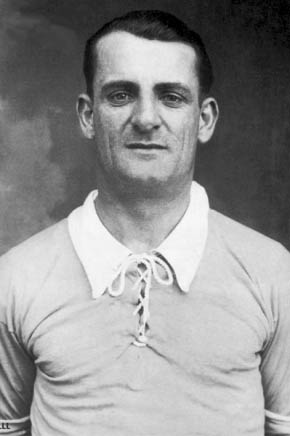

1930
Uruguay
Uruguay
4 goals to 2 v Argentina, Montevideo
Golden BootGuillermo Stábile, Argentina, 8
José Nasazzi
Uruguay's captain lifted the first trophy in front of a home crowd at the Centenario, in a stadium finished days before the tournament began.